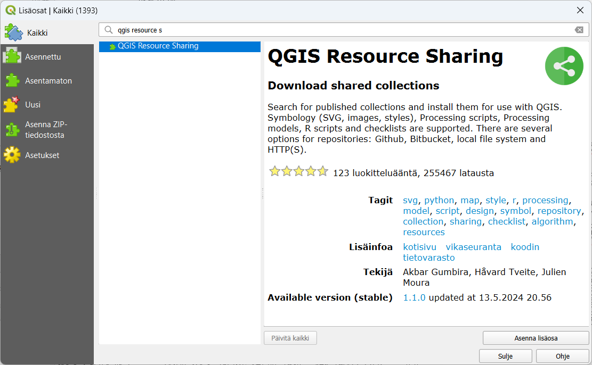
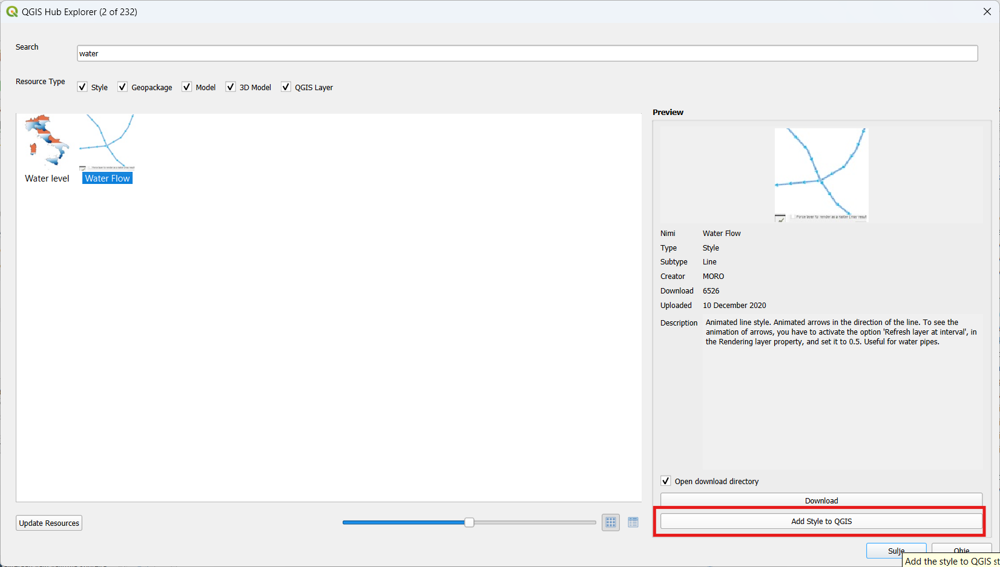
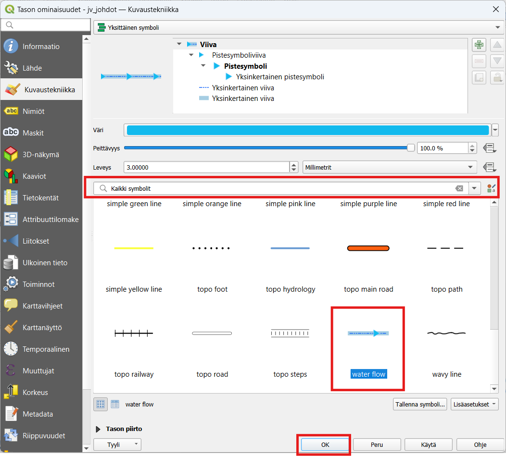
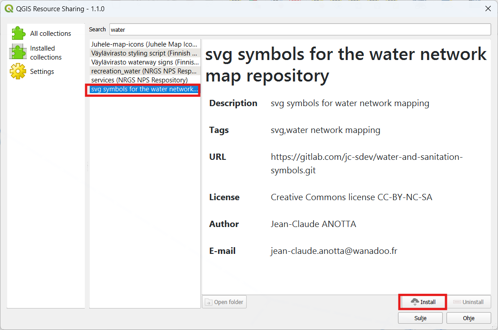
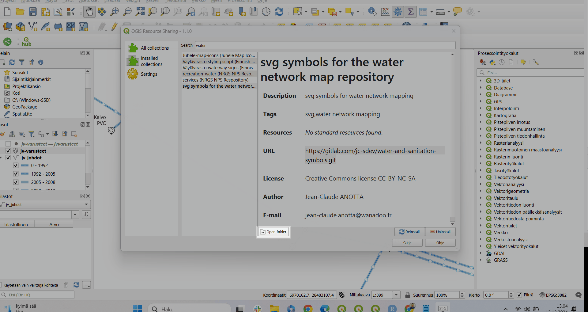
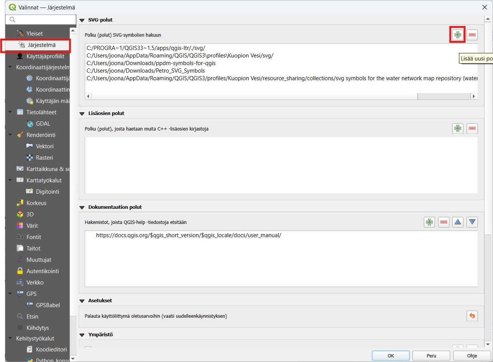
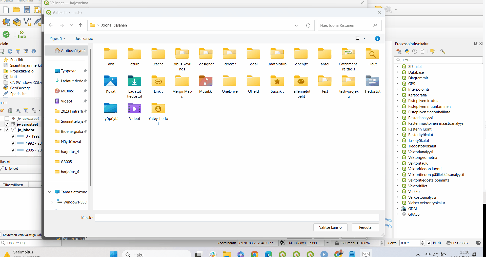
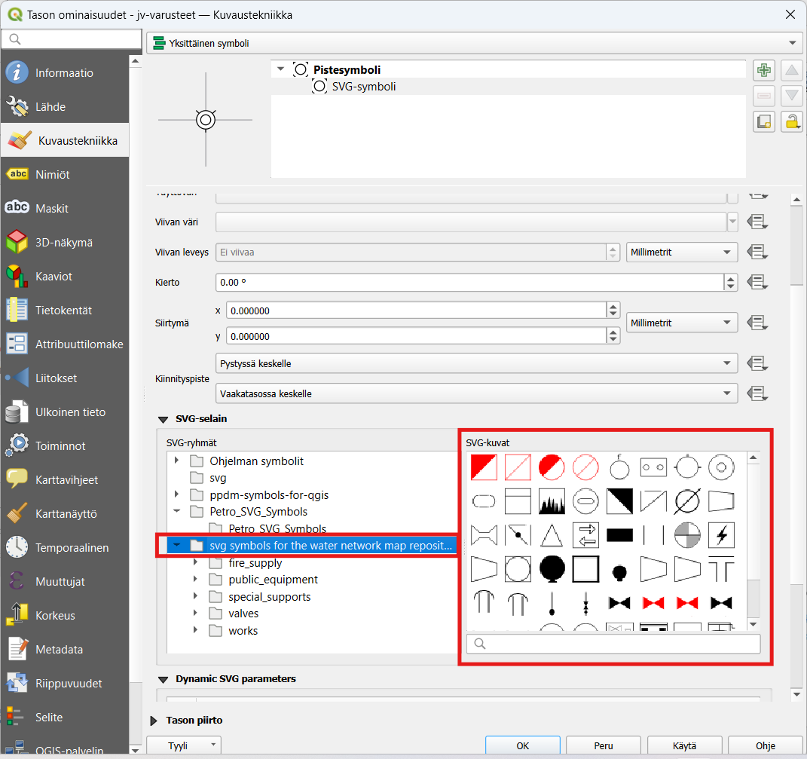

Harjoitus 6: Lisäosien asentaminen, uusien visualisointien hakeminen symbolikirjastoista ja omien symbolien tekeminen
Harjoituksen sisältö
Harjoituksessa tutustutaan lisäosien asentamiseen, uusien visualisointien hakmiseen valmiista symbolikirjastoista ja omien symbolien tekemiseen.
Voit tutustua QGISin lisäosiin QGIS plugins portaalissa. Gispon blogista löydät tietoa henkilökunnan suosimista lisäosista suomeksi.
Harjoituksen tavoite
Koulutettava oppii asentamaan QGIS-lisäsoa ja lataamaan valmiita visualisointikirjastoja QGISiin ja asettamaan QGISiin oletuspolku SVG-kuvakkeille.
Valmistautuminen
Käynnistä QGIS-ohjelmisto. Avaa harjoituksen 4 QGIS-projektisi ja tallenna se nimellä (Projekti → Tallenna nimellä…) “QGIS_harjoitus_6”. Mikäli et tallentanut harjoitusta 4, avaa projektiin seuraavat aineistot:
- Lisää projektiin seuraavat aineistot:
…/jv-johdot.TAB
…/jv-varusteet.TAB
…/viemäripiirit.TAB
SVG-symbolit ovat erittäin hyödyllisiä QGIS:ssä, sillä ne mahdollistavat mukautettujen karttasymbolien käytön.
Tässä harjoituksessa harjoittelemme sekä valmiiden symbolikirjastojen asentamista että omien symbolien tekemistä.
Lisäosien asentaminen
Lisäosia lisätään käyttöön päävalikosta Lisäosat → Hallitse ja asenna lisäosia… -valikon kautta. Valitse Kaikki-välilehti. Asennetaan kaksi hyödyllistä lisäosaa joilla saa käyttään uusia symboleita. Etsi ensin QGIS Hub Plugin ja asenna se painamalla Asenna lisäosa. Etsi tämän jälkeen vielä QGIS Resource sharing -lisäosa ja asenna sekin samalla tavalla.

QGIS Hub plugin
Tämä QGIS lisäosa hakee visualisointeja QGIS Hub- palvelusta. Se tarjoaa kokoelman hyödyllisiä QGIS-resursseja QGIS-tyylistä, tasosta ja käsittelymallista. Tämä QGIS Hub -laajennus auttaa selaamaan käytettävissä olevia visualisointeja ja lisäämään ne suoraan QGIS-järjestelmään.
Kokeile esimerkiski Water Flow- tyyliä. Etsi se haku palkin kautta ja lisää lopuksi QGISiin klikkaamalla Add style to QGIS.

Tämän jälkeen voit kokeilla visualisoida jv-johdot aineistoa tällä visualisoinnilla. Tällöin aineistossa pitäisi näkyä virtausnuolet valmiina.

QGIS Resource Sharing
Tällä lisäosalla saat käyttöön jaettuja kokoelmia esimerkiksi SVG-ikoneita ja tyylitiedostoja. Väylävirasto on esimerkiksi jakanut tämän lisäosan kautta kaikki Suomen liikennemerkit QGIS-kuvakirjastona. (Löytyy lisäosasta hakukenttään syöttämällä “Väylävirasto”. Lisäosasta löytyy myös kaikenlaisia muita symbolikirjastoja. Yksi hyödyllinen SVG-symbolikirjasto löytyy nimellä “svg symbols for the water network map repository” (suom. svg-symbolit vesiverkostolle”. Kokeillaan seuraavaksi ladata tämä ja ottaa se käyttöön. Etsi symbolikirjasto syöttämällä hakukenttään esimerkiksi “water”. Kun olet löytänyt oikean niin asenna se klikkaamalla Install. Tämä symbolikirjasto on lisensoitu CC-BY-NC-SA, joka tarkoittaa Tekijä tai oikeudenomistaja mainittava asianmukaisesti, teoksen käyttö kaupallisiin tarkoituksiin on kielletty ja johdannaisteoksia saa levittää vain samalla lisenssillä kuin alkuperäistä teosta.

Kun asennus on suoritettu onnistuneesti klikkaa Open folder kopioi tämän kansion tiedostosijanti:

Kopioi tämän sijainti leikepöydälle. Seuraavaksi kopioidaan tämä osoite QGISin symbolikirjaston oletus osoitteeksi, jotta kirjaston saa käyttöön.
Mene QGISissa ylävalikosta Asetukset –> Valinnat –> Järjestelmä kohtaan. Lisää uusi polku kohtaan Polku (polut) SVG-symbolien hakuun plus-merkistä.

Lisää tähän sijaintiin juuri kopioimasi sijainti ja valitse lopuksi Valitse kansio.

Tämän jälkeen symbolit ovat käytettävissä suoraan pistemuotoisten tasojen SVG-visualisoinnissa:

Lisätehtävä: Omien symbolien tekeminen
Voit käyttää mitä tahansa vektorigrafiikkaohjelmaa, kuten:
Inkscape (ilmainen ja avoimen lähdekoodin ohjelma)
GIMP
Toimi näin:
Avaa ohjelma ja luo uusi tiedosto.
- Aseta kankaan koko esimerkiksi 100x100 pikseliä.
Piirrä symboli.
Käytä yksinkertaisia muotoja ja värejä.
Vältä liian monimutkaisia elementtejä, jotka saattavat hidastaa QGIS:n toimintaa.
Vie tiedosto SVG-muodossa.
- Inkscapessa valitse Tiedosto -> Vie tallennettuna ja valitse SVG.
Sijoita SVG-symboli oikeaan kansioon
Jotta QGIS löytää symbolisi:
Tallenna tiedosto paikkaan, jossa se on helposti saatavilla. Esimerkiksi:
C:/Users/[käyttäjänimi]/Documents/QGIS/SVGVaihtoehtoisesti voit sijoittaa sen QGIS:n oletussymbolikansioon:
Windows:
C:/Program Files/QGIS 3.xx/apps/qgis/svgMacOS/Linux:
/usr/share/qgis/svg
Lisää SVG-symboli QGIS:ssä
Avaa QGIS ja avaa Tyylieditori:
Klikkaa kerrosta, jonka tyyliä haluat muokata.
Valitse Ominaisuudet -> Tyyli.
Valitse Symbolin tyyppi:
- Valitse Markeri -> SVG-marker.
Klikkaa Tiedosto-painiketta ja etsi luomasi SVG-symboli.
Säädä tarvittaessa kokoa, värejä ja kiertoa.
Tee symbolista uudelleenkäytettävä
Jos haluat käyttää symbolia muissa projekteissa:
- Tallenna tyyli tiedostoksi:
- **Tiedosto -\> Vie tyyli -\> .qml** (QGIS-tyylitiedosto).- Voit myös käyttää Tyylikirjastoa:
- QGIS:n päävalikosta: **Projektit -\> Tyylikirjasto**.Vinkkejä onnistuneeseen SVG-symbolien luontiin
Yksinkertaisuus: Vältä liian monimutkaisia symboleita.
Mittakaava: Testaa symbolin näkyvyys eri mittakaavoissa.
Käytä kerroksia: Kerrokset helpottavat symbolin muokkaamista myöhemmin.
Testaa symboli: Lataa symboli QGIS:ään ja varmista, että se näyttää hyvältä ja toimii odotetusti.